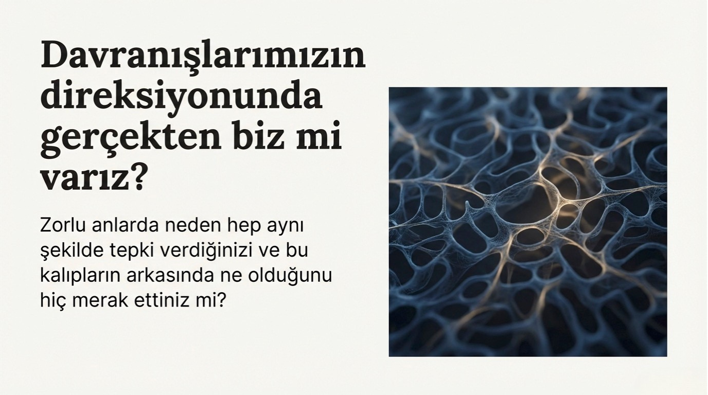

Kendini daha iyi tanı.
Hayatındaki tekrar eden döngüleri fark et.
Neden hep aynı yerde takılıyorum?
Cevabı Enneagram’da.
OANDA Enneagram testiyle stres anındaki otomatik tepkilerini, ilişki dinamiklerini ve iş hayatındaki motivasyonlarını daha net gör.
- Hızlı: Ortalama 20 dakika
- Güvenli ödeme: iyzico altyapısı
- Anında erişim: Ödeme sonrası e-postana tek kullanımlık test kodu
- Testi tamamladıktan sonra, sonuçlarına göre hazırlanan kişisel OANDA Enneagram Kişilik Testi raporu e-postana hemen gönderilir.
Enneagram’ı tanıyalım

Testi tamamladıktan sonra seni nasıl bir rapor bekliyor?
Testi bitirdiğinde, verdiğin cevaplara göre hazırlanan sana özel Enneagram kişilik testi sonuç raporu e-postana gönderilir. Bu rapor, yalnızca bir sonuç listesi değil; kendini ve ilişkilerini daha net anlaman için hazırlanmış kapsamlı bir rehberdir.
Raporda önce Enneagram sisteminin ne olduğu, kişilik tiplerinin nasıl çalıştığı ve sonuçlarını nasıl okuman gerektiği kısaca anlatılır.
Ardından, testte en yüksek puanı aldığın 3 Enneagram tipi senin için detaylı olarak açıklanır.
- Seni harekete geçiren temel motivasyonlar ve tekrar eden iç dinamikler
- Güçlü yönlerin ve zorlandığında ortaya çıkan eğilimler
- İlişkilerde nasıl algılandığın (özellikle iletişim ve çatışma anlarındaki otomatik tepkilerin)
- Stres altındayken verdiğin tepkiler ve rahatladığında ortaya çıkan yönlerin
- İş ve günlük yaşamda bu özelliklerin davranışlarına nasıl yansıdığı
- Kendini geliştirmek için, günlük hayatta uygulayabileceğin somut farkındalıklar ve öneriler
Bu test sana ne kazandırır?
Daha az stres
Zorlandığında neden öyle tepki verdiğini fark etmek, stresi yönetmeyi kolaylaştırır.
Daha konforlu bir yaşam
Tetikleyicilerini ve ihtiyaçlarını netleştirdikçe günlük hayat daha “hafif” hissettirir.
Daha doyumlu ilişkiler
Sevgili/ilişki tarafında çatışma noktalarını ve beklentileri daha iyi okursun.
Çevreni daha iyi anlama
İnsanların motivasyonunu çözdükçe iletişim daha akıcı ve sakin olur.
İşini daha iyi anlama
İş ortamında seni ne motive ediyor, ne yoruyor — daha net görürsün.
Yönünü bulma
Karar süreçlerinde “gerçek ihtiyacın” ile “alışkanlık tepkini” ayırt etmeyi öğrenirsin.
Kısa özet
- Ödeme sonrası e-postana tek kullanımlık test kodu gelir.
- Kod ile test sayfasına girip testi başlatırsın.
- Test 20 sorudan oluşur.
- Her soruda 9 ifade arasından sana en uygun 3 tanesini seçersin.
- Test sonrası kişisel rapor e-postana gönderilir.
Biz kimiz?
OANDA Enneagram, alanında uzman bir akademisyen ve uzman bilişsel psikoloğun yer aldığı bir ekip tarafından, bilimsel bilgiyle gerçek hayatı buluşturmak amacıyla oluşturuldu. Biz bu testi, insanları sınıflamak ya da etiketlemek için değil; kendilerini daha net görmelerine yardımcı olmak için geliştirdik.
Biz bu teste inanıyoruz. Çünkü aynı döngülerin içinde takılı kalmanın ne kadar yorucu olabileceğini biliyoruz.
Biz neye yardım ediyoruz?
Birçok insan şunları yaşıyor:
- Aynı ilişki döngülerine tekrar tekrar girmek
- Stres altında “neden böyle tepki verdim?” sorusunu geç fark etmek
- Aslında neye ihtiyaç duyduğunu netleştirememek
- Kendini suçlayarak açıklamalar aramak
Çoğu zaman sorun ne yaşadığımız değil;
neden hep aynı şekilde tepki verdiğimizi fark etmemek.
Biz hazır cevaplar vermiyoruz. Kendi iç dinamiklerini suçlamadan fark edebileceğin, net bir çerçeve sunuyoruz.
Bu test neden güvenilir?
- Bilimsel temelli ve yapılandırılmış: Test, akademik bilgi ve psikoloji literatürü temel alınarak, anlamlı bir ölçüm mantığıyla oluşturulmuştur.
- Yorum değil, farkındalık sunar: Amaç seni bir tipe hapsetmek değil; stres, ilişki ve günlük hayattaki otomatik eğilimlerini daha net görmene yardımcı olmaktır.
- Sonuç odaklı ve uygulanabilir: Test sonrası rapor, günlük hayatta kullanabileceğin somut farkındalıklar ve öneriler içerir.
Bu test kimler için uygun değil?
Eğer hızlı bir etiket, tek cümlelik bir kişilik tanımı ya da “şöyle olmalısın” diyen hazır reçeteler arıyorsan, bu test sana göre olmayabilir.
Bu test, kendine dürüstçe bakmaya hazır olanlar için var.
Buraya kadar okuduysan, bu testin sana uygun olup olmadığını
büyük ihtimalle zaten anladın.
Hazırsan, şimdi teste geçebilirsin. Teste Başla
Görüşler
Senin deneyimin nasıldı?
Görüşlerin bizim için çok değerli. Deneyimlerini paylaşarak başkalarına da ilham verebilirsin.
İstersen ad–soyad yazabilirsin. Yorumlar sitede baş harflerle yayınlanır. Dilersen anonim de paylaşabilirsin.